Plan
- Scatterplots
- Linear regression
- Differential equations for population growth
- PBL
Fedor Duzhin
Nanyang Technological University
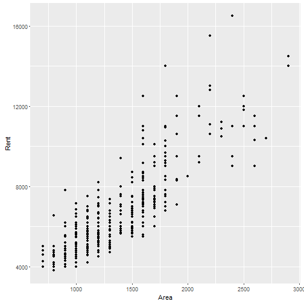
Rental price vs floor area at Reflections at Keppel Bay in Apr 2015 - Mar 2016.
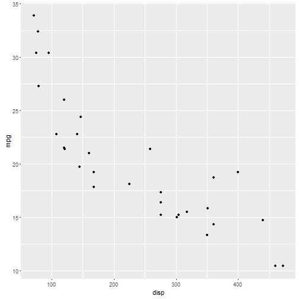
Fuel consumption (miles per gallon) vs engine displacement (cubic inches).
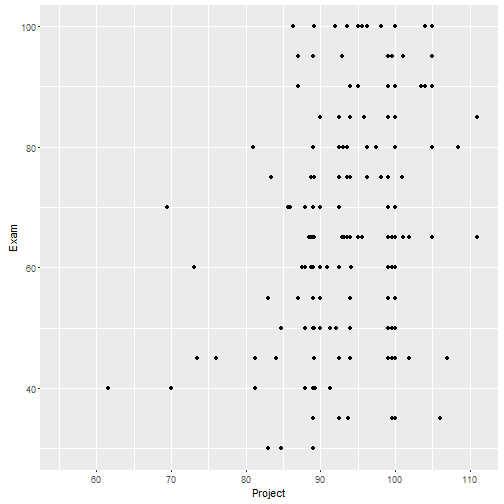
Ordinary differential equations class at NTU: Final exam score vs PBL score.
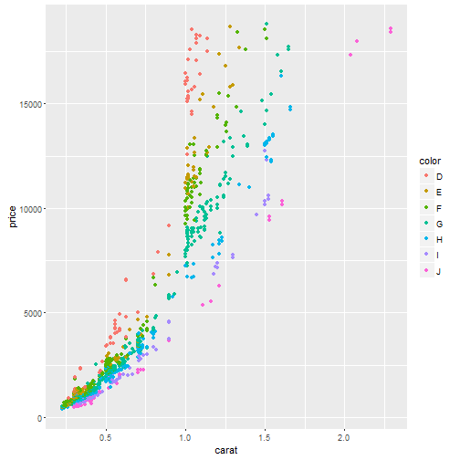
Prices of diamonds depending on weight and colour.
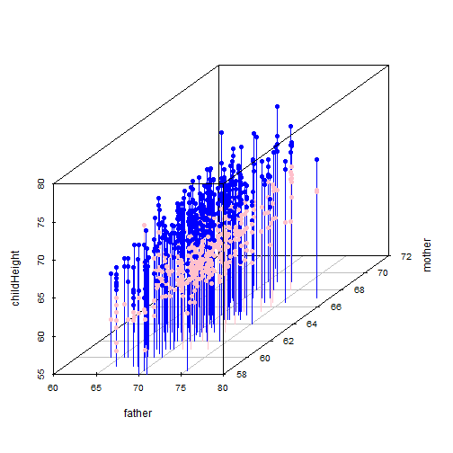
Height of children (blue=male, pink=female) depending on father's height and mother's height.
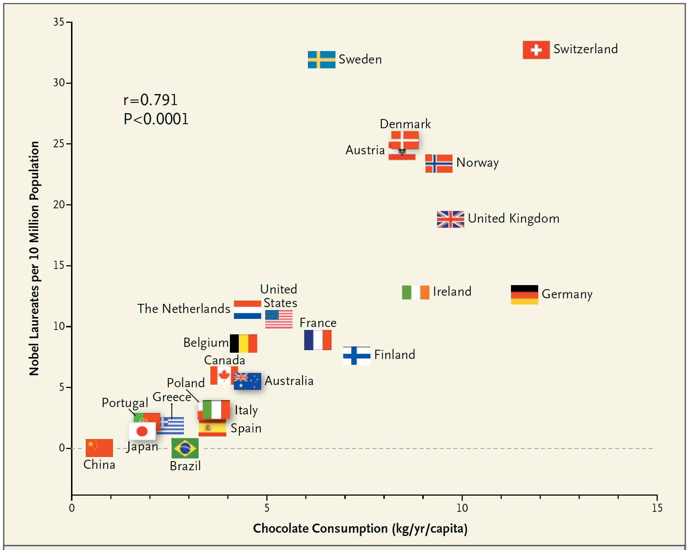
Number of Nobel laureates per capita vs chocolate consumption
Ohm's Law: \[ V=IR \]
Data points \((V_k,I_k)\) from measurement:
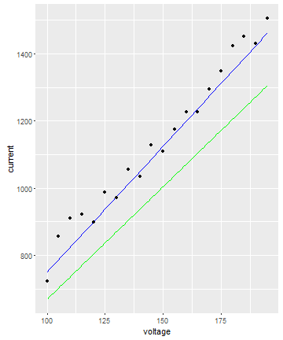
What is a correct form of \(E(R)\)?
Which quantity depends on all data points and cannot be negative?
The right answer is \[ E(R)=\sum_{k=1}^{n}|RV_k-I_k| \] \(|RV_k-I_k|\) is deviation of the line \(I=RV\) from each data point. It cannot be negative. The sum of all these values measures the total deviation of the line from all data points.
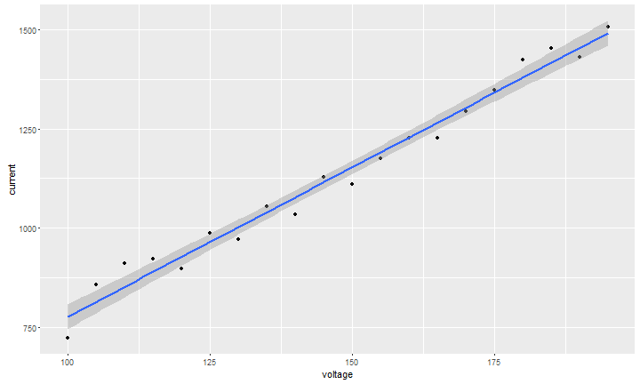
Discuss the meaning of the shadowed region
Data points \((x_1,y_1),\dots,(x_n,y_n)\). Assumption: \(Y=aX+b\).
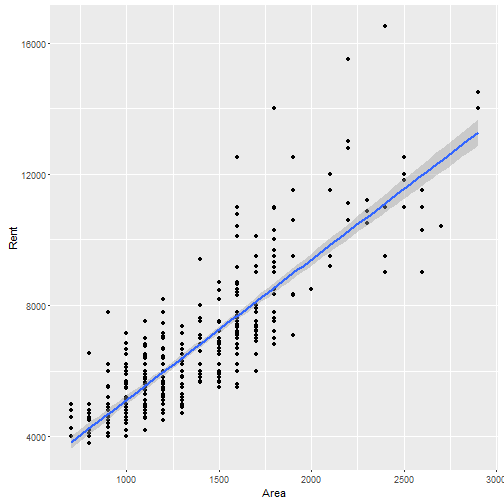
Is linear regression a true model?
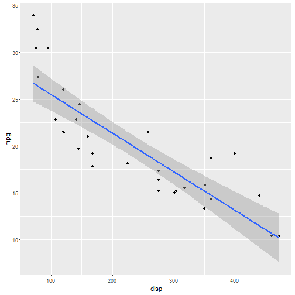
Is linear regression a true model?
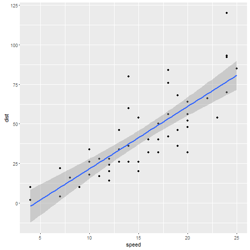
What should be the right model?
If \(v\) is the speed and \(s(v)\) is the stopping distance, what's the right model?
The stopping distance consists of reaction distance and braking distance.
The right answer is \[ s(v)=av^2+bv \] The first term is braking distance, i.e., proportional to the kinetic energy. The second term is reaction distance, i.e., proportional to the speed of the car.
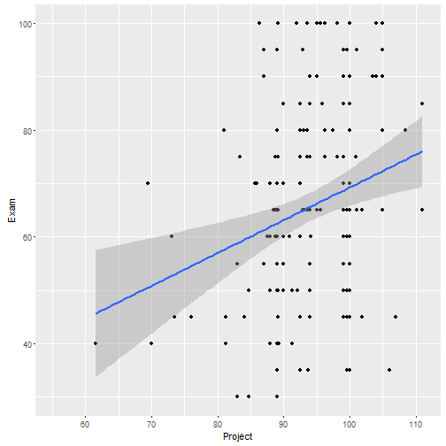
Is linear regression a true model?
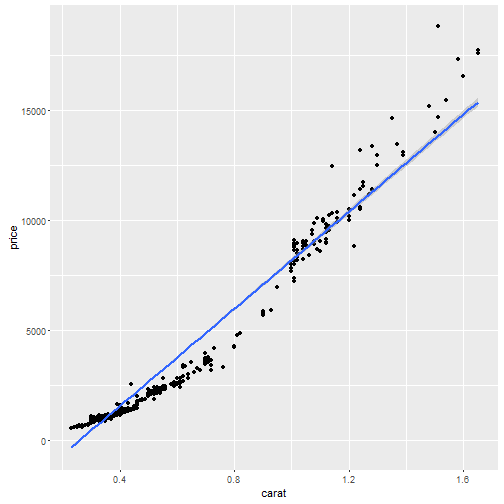
What would be the best model? Square? Exponential function?
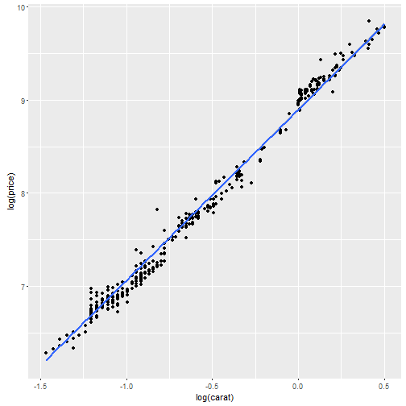
What does it mean?
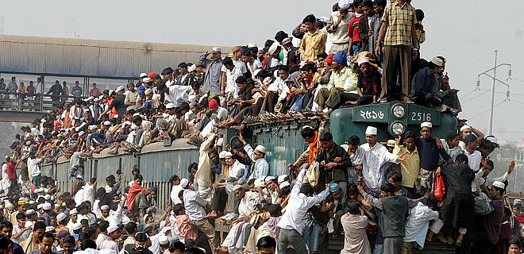
Exponential growth \[ \frac{dP}{dt}=rP\quad\leadsto\quad P(t)=P_0e^{rt} \]
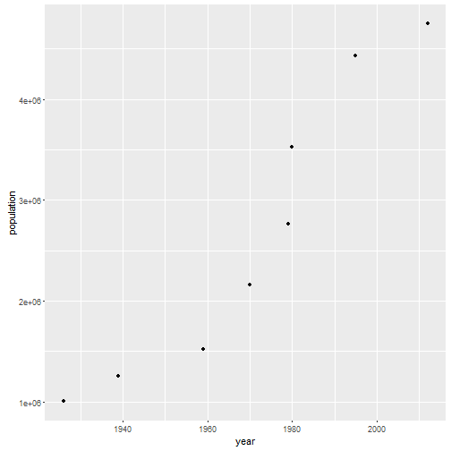
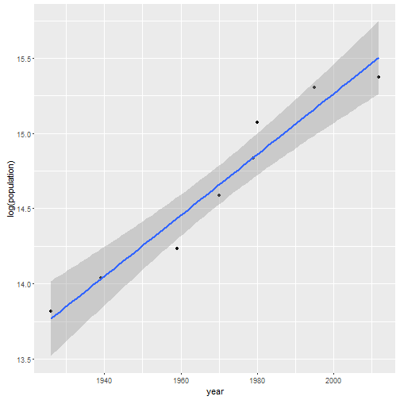
Logistic growth \[ \frac{dP}{dt}=r\cdot P\cdot \left(1-\frac{P}{K}\right) \]
In 1992, collapse of the Atlantic northwest cod fishery cost 35000 jobs. The industry operated on the ODE \[ \frac{dP}{dt}=r\cdot P\cdot \left(1-\frac{P}{K}\right)-\alpha P, \] where \(\alpha\) is the number of fishing boats. The government misinterpreted the data and overestimated the existing fish population.
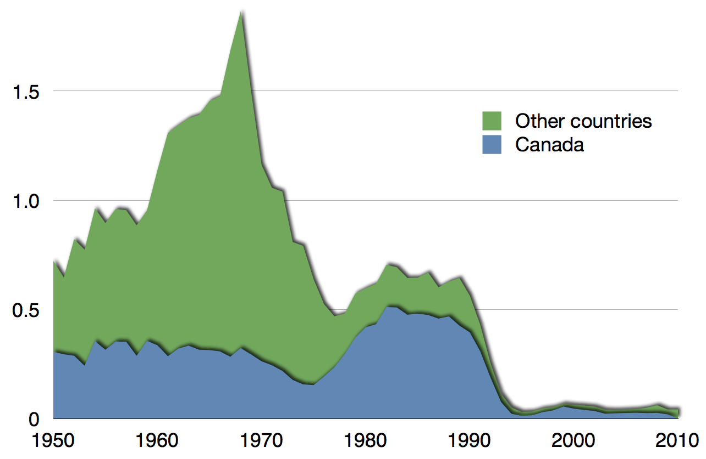
Choose a country. Find its historical population data (it's a part of the challenge). Then you've got to model the population, produce a scatterplot with the model superimposed on data points, and make a prediction. There will be three versions of the challenge and you need to choose one. The harder the challenge, the higher your grade will be.
Assuming the exponential model \(P(t)=P_0e^{rt}\), where \(P_0\) is directly observed as initial population, fit the model into data and calculate \(r\). According to the model, when is the country's population going to reach 6 bln?
Choose a country. Find its historical population data (it's a part of the challenge). Then you've got to model the population, produce a scatterplot with the model superimposed on data points, and make a prediction. There will be three versions of the challenge and you need to choose one. The harder the challenge, the higher your grade will be.
Assume the logistic model \[ \frac{dP}{dt}=r\cdot P\cdot\left(1-\frac{P}{K}\right). \] It depends on 3 parameters, \(r\), \(K\), and \(P_0\). Assign a reasonable value to \(K\). Solve the differential equation. Fit \(r\) and \(P_0\) into data. According to the model, when is the country's population is going to reah 95% of its carrying capacity?
Choose a country. Find its historical population data (it's a part of the challenge). Then you've got to model the population, produce a scatterplot with the model superimposed on data points, and make a prediction. There will be three versions of the challenge and you need to choose one. The harder the challenge, the higher your grade will be.
Assume the logistic model \[ \frac{dP}{dt}=r\cdot P\cdot\left(1-\frac{P}{K}\right). \] It depends on 3 parameters, \(r\), \(K\), and \(P_0\). Solve the differential equation. Fit \(r\), \(K\), and \(P_0\) into data. According to the model, what is the country's carrying capacity?